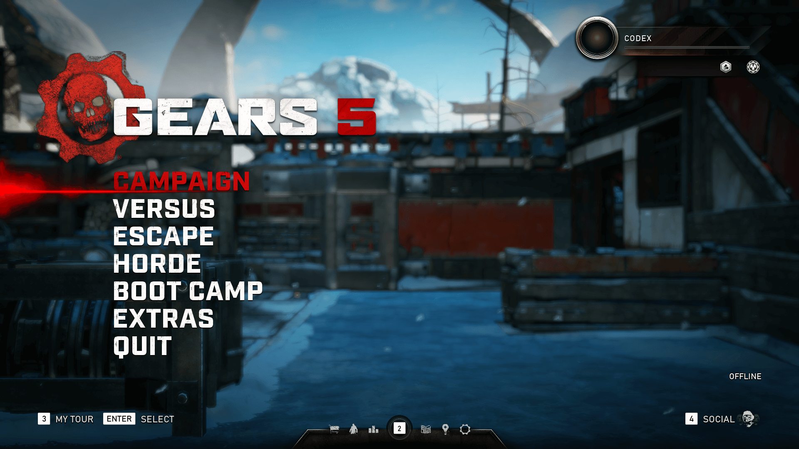

Gears 5
« Voltar para Seleção do Game
 |
 |
 |
 |
Desenvolvedora: The Coalition
Plataforma: Xbox One, PC e Xbox Series S/X
Ano de Lançamento: 2019
Sinopse: O mundo está desmoronando. A dependência da humanidade pela tecnologia tornou-se sua queda e os inimigos estão se unindo para exterminar todos os sobreviventes. Enquanto a guerra total se aproxima, Kait Diaz se separa do grupo para descobrir sua conexão com o inimigo.
Gears 5 foca na jornada pessoal de Kait para desvendar as origens do Swarm e os segredos sombrios de sua própria linhagem familiar. Com cenários deslumbrantes que variam de desertos de areia vermelha a geleiras vastas, o jogo introduz o Skiff para exploração e expande o universo de Gears com a maior campanha já feita na história da saga.